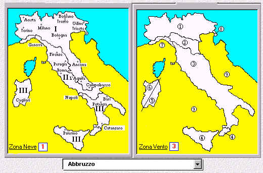
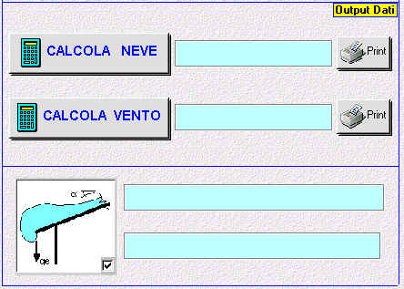

L'applicativo si compone di
quattro pagine (fogli di excel) e di una serie di procedure software sviluppate in visual
basic:
HOME
CALCOLO SPINTA VENTO
CALCOLO CARICO NEVE
CAT.ESP.VENTO
FOGLIO
"HOME"
E' la sezione principale dedicata all'input
dei parametri di calcolo ed all'esecuzione delle verifiche con visualizzazione dei valori
principali relativi alla spinta del vento ed al carico della neve.
Si possono distinguere le seguenti due sezioni principali :
INPUT DATI
1) scelta della zona di riferimento per il
calcolo

sezione relativa alla scelta della località per l'assegnazione dei coefficienti di zona
neve e vento
(mediante una casella a tendina attivabile con un click del mouse sulla freccia a destra
della casella)
2) scelta per:
- classe di rugosità del terreno
- quota assoluta q.s.m. ed altezza dell'edificio
- scelta del tipo di copertura e definizione dei relativi parametri caratteristici
le caselle a sfondo azzurro sono automaticamente riempite con i parametri derivanti dalle
scelte effettuate
(mancando uno di questi poarametri viene segnalata l'impossibilità di eseguire il
calcolo)
Con il pulsante
<<<RESER>>> è possibile annullare eventuali impostazioni ed
elaborazioni precedentemente memorizzate!
OUTPUT DATI
Completata l'immissione dei parametri può
essere eseguito il calcolo per la determinazione del carico neve e spinta vento : nelle
caselle a sfondo azzurro, sopra i pulsanti di attivazione del calcolo, saranno
istantaneamente evidenziati i valori del carico neve al suolo e della spinta vento per
unità di superficie. Nelle caselle poste all'interno del riquadro inferiore viene
visualizzato il valore del carico neve sulla grondaia della falda. (al massimo due valori
relativi a coperture a due falde con angoli di pendenza anche differenti). Il dettaglio
del calcolo eseguito può essere visualizzato (e quindi stampato) mediante i due pulsanti
di <Print>

FOGLIO
"CALCOLO SPINTA VENTO"
Viene visualizzato in dettaglio il calcolo
eseguito e può essere generata la stampa
CALCOLO CARICO
NEVE
Viene visualizzato in dettaglio il calcolo
eseguito e può essere generata la stampa
CAT.ESP.VENTO
E' rappresentata la tabella di riferimento
delle categorie relative alla esposizione al vento : ha una funzione esclusivamente
documentativa in quanto il calcolo viene svolto interamente in automatico e quindi anche
la determinazione delle categorie, in funzione dei parametri immessi!
|